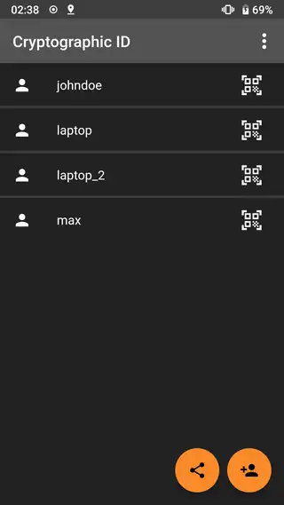
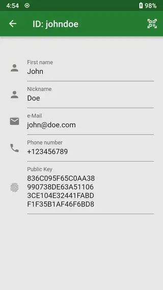

Cryptographic ID
أمان وخصوصية
Use cases: - Attest the state of a Linux computer When your computer is in a trustworthy state, you can generate a private key hidden in the TPM2 of your computer. This private key can be sealed with the current state of the computer (PCRs). Then the computer can only sign a message with this key wh
✓ ترخيص مفتوح (MIT) · آخر تحديث: 2026-04-14
0.5.7الإصدار
52.2 MBالحجم
MITالرخصة
Open in Kanzتحميل APK (52.2 MB)
Download APK
SHA-256: 90b2d626c66f3aef179437105513f6354cb335f66e06bd8c2345492f4daafc76


امسح الكود لفتح صفحة التطبيق
Scan to open this app page
لو كنز مش متثبت عندك: نزّل متجر كنز.
Not installed? Get the Kanz store.